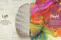

Pop and Tip! (2013.12.10 - 2014.4.10)

For the contest of kinect based development(China), I made this game with other two friends. The theme of the contest was World Cup, according to which we designed a sport game named pop&tip.
In this game we create a little Matchstick Men that can perfectly replicates your motion timely and intercats with a ball on the screen. The ball, based on complex algorithm, can move in and bounce in a natural way.We also took use of MS SDK for Kniect to add some UI conponents like floating button and Air mouse, and voice control. You can see the detail in the video right by side.
{kind=link}
Team Members
Zhang zongsi(Captain), undergraduate, college of software engineering, Southeast University.
Han Chunnan(coder), undergraduate, college of software engineering, Southeast University.
Yan Qing(designer), undergraduate, college of art, Southeast University.
As the captain, I wrote many documents like the requirement document to control our progress. But unfortunately, my dear Han Chunnan got in trapped by love and left all code works with me. So with the artistic support from Yan qing, I finished all programming works by myself. But I rarely blamed him becasuse this project was so fascinating that I was willing to finish it even if without any help.
What's special
The main function we've implemented was the interaciton with a virtual ball. Thanks to Kinect sdk, it was not so difficult to catch and draw people's body on the screen. What really had afflicted me was how to simulate the motion and collision effect in real world.
To finish this algorithm, I reviewed a lot of geometry knowledge, including some triangular geometry equalities. I also imported the polar coordinates to help set certain value and finish calculation.
Another difficulty was that in computer, update is incontinuous in time, which means that if the speed of the ball or human body was too fast, the next time computer update the position data, the ball may totally have passed through the body, leading to bugs. To fix this problem. I took all posible conditions into account and dealt with them respectively. About six main conditions was listed in the picture by side.
Cool tools!
This game was built as a project on Visual studio, and besides original codes, many parts was built based on existing tools as follow.
Microsoft XNA SDK, the official tools for kinect development, is highly packaged and easy to use. The stream of skeleton and color image was offered, digging and analyse data from which can help me control the status of user.
Microsoft XNA, a game development system, offers the basic function of graphic API like vertex drawing and model disposal, which means I many extra works have to be done by myself.
C#. the whole programming work was done via C#, and some library offered by .NET Framework.
Air mouse vs GestOpt
Based on kinect, there is no input source but the motion of user, which requires new conception of UI design and implements. And in line with tips from some books, I implemented the air mouse and accordingly designed some float button as the basic of control.
Take use of Kinect SDK, I can the position of user's hand in real time and drew it on the screen synchronously.
GestOpt is another part of my UI design. By catching the position of various joints(like hand, head, wrist, elbow,etc) and checking their state according to the DFA that was previously designed, We can get to know what kind of action the user is doing and so that feedback accordingly. As the video shows, we can handle gestures like waving around. Our guidiance interface was implemented by this function.
Really a tough work
For 5 months, more than 10000 lines of codes and thousands words of documents I wrote, For many weekends I stayed in our lab until midnight alone. Although unfortunately I failed to won a prize, I've never regreted because this game, so fascinating and amazing, deserves my payment.
Highly thankful for people who have offered their support. Especially my dear team members and my teacher Ms.Yao, who offered me Kinect and many technical help.